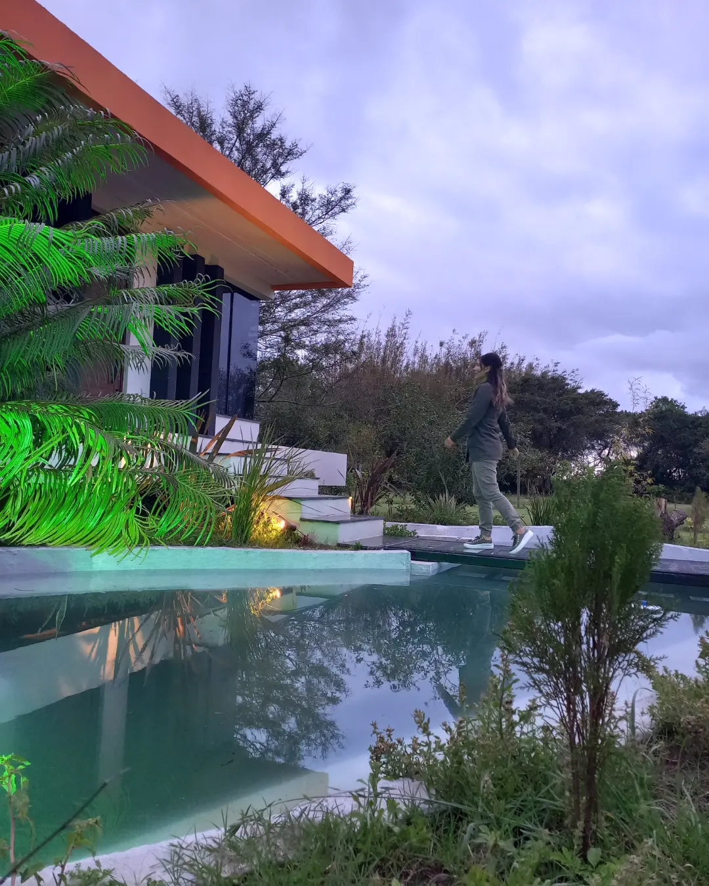

Quem Somos?
O Engenheiro Henrique Martin desde criança sempre esteve envolvidos com obras visto que seus pais estavam sempre reformando casas. Em 2008 ele entra para Eng. Civil na universidade Federal de Rio Grande (FURG) e ja no inicio da universidade ele inicia sua carreira na area de projetos.

Ao se formar ja tinha varios projetos e se muda para os EUA por um curto periodo de tempo, onde se inpira em projetos praticos e rapidos. De volta ao Brasil, inicia a empresa contratando 2 pessoas e colocando em pratica todo seu conhecimento. Hoje possui mais de 500 projetos ja construídos
Foi criado um Canal no Youtube para divulgar os projetos criados e também a venda. Hoje somandos os dois canais principais temos mais e 10.000 Inscritos.


A martin projeto foi crescendo, uma sede nova foi construida e hoje conta com 10 funcionarios, entre eles:
- Engenheiro Civil Henrique Menestrino Martin, CREA RS207789
- Designer de Interiores Thais Martin, responsavel por interiores
- Engenheiro Josepher Caetano, setor de lista de materiais e projetos complementares
- Arquiteto Mario Dziekaniak, responsavel pelo 3d inicial
- Engenheira Thainara Almeida, reponsavel pelo atendimento e planta baixa inical
- Engenheiro Rafael Pedroso, setor de 3d inicial
- Arquiteta Bruna Vieira, trabalha a distancia de Garopaba, responsavel pelo 3d final.
- Estagiaria de Arquitetura Nicolly Lackman
- Estagiario de Engenharia Civil Greg Markoski
A Sede da empresa foi inalgurada dia 4 de Julho de 2022 em um local lindo, rural, para garantir um projeto inspirado e focado em atender clientes Online. Endereço: Rua Ana Pernigotti, 1022, Rio Grande - RS

Apesar de hoje estarmos muito conhecidos, não mudaremos nosso foco inicial de ter o melhor preço de projetos do Brasil
Quer Saber por que somos os melhores? Por quê nós?
Entre em Contato!